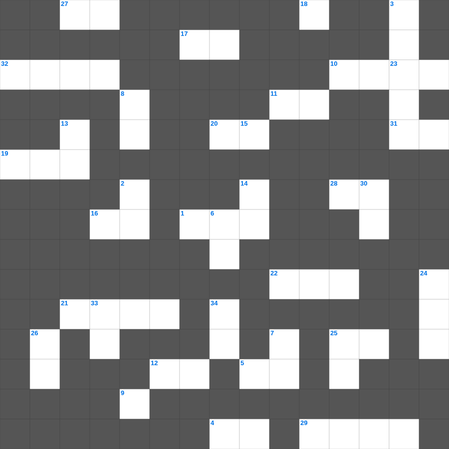

마태복음 마스터 100 (1/2)
📌 서비스 정의
십자가로세로는 교회 주보와 주일학교에서 사용할 수 있는 성경 기반 가로세로 퍼즐 서비스입니다. 성경 인물, 사건, 핵심 구절을 바탕으로 제작되었습니다. 온라인 풀이 및 인쇄 기능을 제공합니다.
📖 마태복음란?
마태복음은 예수 그리스도를 다윗의 자손이자 약속된 메시아로 소개하며, 그분의 탄생부터 가르침, 십자가와 부활까지를 유대인의 관점에서 기록한 복음서입니다.
📚 마태복음의 주요 사건·주제
예수님의 탄생과 동방박사의 경배 · 산상수훈 · 여러 비유들(천국 비유) · 예수님의 십자가와 부활 · 지상명령(마태복음 28장)
무료로 즐기는 마태복음 마태복음 낱말 퍼즐! 35개의 힌트로 구성된 가로세로 낱말 퍼즐입니다. PC와 모바일 모두 지원되며, 정답을 바로 확인할 수 있어 혼자서도 쉽게 풀 수 있습니다.

📝 가로 힌트
1. 그러므로 형제들아 더욱 힘써 너희 부르심과 이것을 굳게 하라
4. 그 입으로 자랑하는 말을 하며 이익을 위하여 이것을 하느니라
5. 오직 하나님의 능력을 따라 복음과 함께 이것을 받으라
9. 너희가 도리어 말하기를 주의 이것이면 우리가 살기도 하고 이것저것을 하리라 할 것이거늘
10. 기약이 이르면 하나님이 그의 나타나심을 보이시리니 하나님은 복되시고 유일하신 이것이시며
11. 내일 일을 너희가 알지 못하는도다 너희 생명이 무엇이냐 너희는 잠시 보이다가 없어지는 이것이니라
12. 경건을 무엇의 방도로 생각하는 자들과 다투지 말라 했나
16. 예수께서 풍랑을 잔잔케 하실 때 제자들에게 하신 질문: 어찌하여 이렇게 이것이 없느냐
17. 이스라엘아 네 하나님 여호와께로 돌아오라 네가 이것으로 말미암아 엎드러졌느니라
18. 의를 위하여 고난을 받으면 이것 있는 자니 그들이 두려워하는 것을 두려워하지 말며 소동하지 말고
19. 백성들이 제물로 드렸던 부적절한 짐승들의 상태 (눈먼 것, 저는 것, 이것)
20. 선물은 육체의 더러운 것을 제하여 버리는 것이 아니요 하나님을 향한 선한 양심의 이것이라 (3장 21절)
21. 두 사람이 이것 하지 못하고야 어찌 동행하겠으며
22. 주는 가장 자비하시고 이것 여기시는 이시니라
23. 병사로 복무하는 자는 자기 이것 생활에 얽매이는 자가 하나도 없나니
25. 하나님이 이스라엘을 인도하신 방법 (이것의 줄 곧 사랑의 줄)
27. 주 여호와께서 말씀하신즉 누가 이것 하지 아니하겠느냐
28. 주라 그리하면 너희에게 줄 것이니 곧 후히 되어 누르고 흔들어 이것 하도록
29. 나누어 주기를 좋아하며 이것 자가 되게 하라
31. 주 안에서 항상 기뻐하라 내가 다시 말하노니 기뻐하라 너희 이것을 모든 사람에게 알게 하라
📝 세로 힌트
2. 깨끗한 양심에 이것의 비밀을 가진 자라야 할지니라
3. 경기하는 자가 법대로 경기하지 아니하면 이것을 얻지 못할 것이며
6. 베드로후서 3장 8절: 주께는 이것이 천 년 같다
7. 오히려 너희가 그리스도의 이것에 참여하는 것으로 즐거워하라
8. 한 입에서 찬송과 이것이 나오는도다
13. 베드로가 편지를 쓴 목적 중 하나: 이것이 하나님의 참된 은혜임을 증언함
14. 선한 이것을 가지라 이는 그리스도 안에 있는 너희의 선행을 비방하는 자들로 그 비방하는 일에 부끄러움을 당하게 하려 함이라
15. 너희는 욕심을 내어도 얻지 못하며 살인하며 시기하여도 능히 취하지 못하므로 다투고 싸우는도다 너희가 얻지 못함은 이것하지 아니하기 때문이요
24. 너희 이것을 기경하라 지금이 곧 여호와를 찾을 때니
25. 큰 잔치 비유: 사람들이 다 일치하게 이것 하여 이르되 나는 밭을 샀으매
26. 요나가 밤낮 이것을 물고기 배 속에 있으니라
30. 너희가 그리스도의 이름으로 이것을 당하면 복 있는 자로다 영광의 영 곧 하나님의 영이 너희 위에 계심이라
33. 하나님은 무엇을 미워하시며 의복으로 폭력을 가리는 자를 미워하시는가
34. 근심하는 자 같으나 항상 기뻐하고 가난한 자 같으나 많은 사람을 이것하게 하고
🧩 이 퍼즐에서 배우는 내용
이 퍼즐은 마태복음 마스터 100 (1/2)의 핵심 단어와 개념을 자연스럽게 복습할 수 있도록 구성되었습니다. 주일학교 수업이나 개인 성경공부에서 학습 내용을 점검하는 용도로 바로 활용할 수 있습니다.
🧑🏫 교회 교육 자료 활용
이 퍼즐은 주일학교 교재 추천 자료로 활용할 수 있고, 주일학교 주보에 넣기 좋은 분량으로 구성되어 있습니다. 수업용 주일학교 교안에 활동지로 붙이거나, 예배 후 복습용 주일학교 공과교재로 바로 사용할 수 있습니다.
🏷️ 키워드
마태복음 낱말 퍼즐, 마태복음, 십자가로세로, 성경퀴즈, 말씀퀴즈, 가로세로퍼즐, 주일학교 교재 추천, 주일학교 주보, 주일학교 교안, 주일학교 공과교재